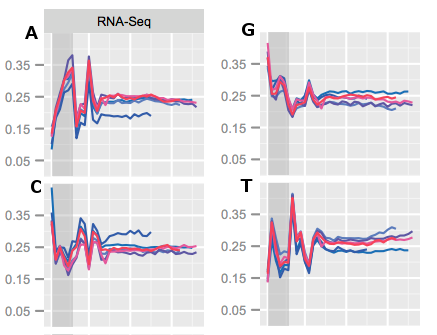
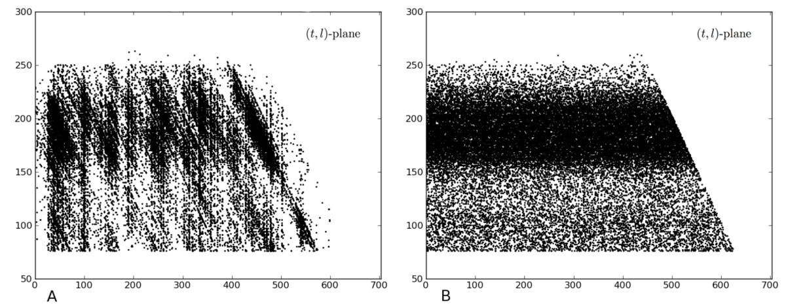
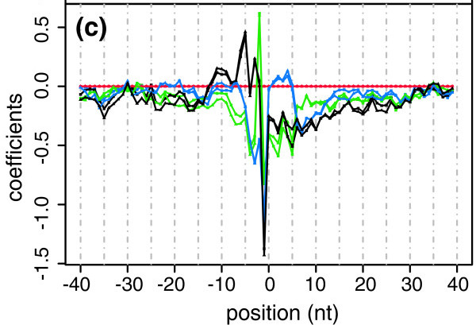

Technical bias in sequencing data
Michael Love
Research Fellow
Irizarry group, DFCI/HSPH
Bias


thought experiment: measure potholes in Boston vs Cambridge
- everyone's rulers are off by +1 cm
- Boston rulers left in the sun, stretched by +1 cm
- bias cancels out
- bias is correlated with comparison of interest
...sounds simple, but still we see datasets with 100% confounding of condition with experimental batch
"Sequencing bias"
- this talk: bias in use of sequencing as a quantitative assay
- there is also bias in sequencing, e.g. calling bases A,C,G,T
Example 1: DNA sequencing
- we are sequencing DNA for genotyping
- meanwhile, use data to find copy number
Copy number

relative to a reference genome


Reads stored in "Fastq" file

Align reads to reference genome

the local number of reads: "read depth"
Local read depth
changes in read depth relative to a reference:

Copy number
Bias
deviation of coverage from that expected
from proporitions of molecules in the "pool"


Assumptions
- uniform rate of coverage
- or at least, sample / reference is ok
Amplification
involves polymerase copying DNA many times over

Amplification
- polymerase has a preference for certain number of C,G
- slightly from different experiment to experiment
Observing GC bias
- partition the genome into windows
- count the number of reads
- calculate the ratio (C+G)/(A+C+G+T)
Differential GC bias


Correction
- divide counts by prediction from model, \(\hat{\mu}\)
- then look at ratio of corrected counts
- alternatively, put \(\hat{\mu}\) in the model
Summary 1
- GC bias was different between sample and reference
- bias didn't cancel
- modeling on features we generated in silico helped
Example 2: RNA sequencing
- we want to quantify mRNA and compare across patients
- needed for research and as a marker in diagnostics
RNA sequencing protocol
Bias in RNA sequencing
deviation of coverage from expected
given the proportion of molecules in the pool
a few sources of bias
- fragmentation and size selection
- primer ligation
- PCR
(other steps are certainly also important)
fragmentation, size selection

fragmentation, size selection
primer ligation

- random hexamer priming biases read starts
- weight each read using the observed freq's

useful plot for identifying non-uniform coverage

linear model of the Poisson rate including sequence bias
Multiple isoforms per gene

model for estimating isoform abundances including fragmentation, size selection, sequence bias
Probability of a vector of read counts \(\vec{n}\), indexed by read type j:
\[ f_\theta(\vec{n}) = \prod_j f_{Pois}(n_j, \vec{\theta} \cdot \vec{a}_j ) \]
- \(\vec{\theta}\) are the isoform abundances
- \(\vec{a}_j\) are the rates, 0 if read \(j\) cannot be generated by the isoform
- rates include bias
Multiple isoforms per gene

likelihood of isoform abundances given fragment length distribution and sequence bias: used in Cufflinks
Aggregate bias at the gene level
- model gene counts on known covariates
- factor analysis
- add batch to model formula
conditional quantile normalization

Bias in batches

Surrogate variable analysis

SVA: Leek et al 2007, svaseq: Leek 2014
Add batch to the model
Per gene, model the mean for sample j, \(\mu_j\), as:
\[ log(\mu_j) = \beta_0 + \beta_{b} 1_{j \in B} + \beta_{t} 1_{j \in T} \]
where B is the second batch, T is the treated samples.
Summary 2
- At the read level:
- Include bias in model for isoform abundances
- At the gene level:
- Model on known covariates
- Remove unknown batch differences with factor analysis
- Remove any differences correlating with batch
count \(\sim\) \(\mathcal{L}\) (bias \(\cdot\) biology)
Bias and batch
- Accurate measurements necessary for research
- Way more important if used as markers